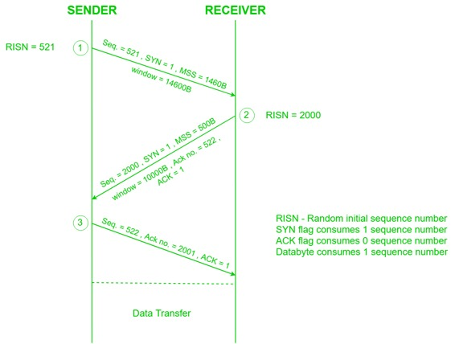

Prerequisite – TCP 3-Way Handshake Process
TCP is a connection oriented protocol and every connection oriented protocol needs to establish connection in order to reserve resources at both the communicating ends.
Connection Establishment –
- Sender starts the process with following:
- Sequence number (Seq=521): contains the random initial sequence number which generated at sender side.
- Syn flag (Syn=1): request receiver to synchronize its sequence number with the above provided sequence number.
- Maximum segment size (MSS=1460 B): sender tells its maximum segment size, so that receiver sends datagram which won’t require any fragmentation. MSS field is present inside Option field in TCP header.
- Window size (window=14600 B): sender tells about his buffer capacity in which he has to store messages from receiver.
- TCP is a full duplex protocol so both sender and receiver require a window for receiving messages from one another.
- Sequence number (Seq=2000): contains the random initial sequence number which generated at receiver side.
- Syn flag (Syn=1): request sender to synchronize its sequence number with the above provided sequence number.
- Maximum segment size (MSS=500 B): sender tells its maximum segment size, so that receiver sends datagram which won’t require any fragmentation. MSS field is present inside Option field in TCP header.
Since MSSreceiver < MSSsender, both parties agree for minimum MSS i.e., 500 B to avoid fragmentation of packets at both ends.Therefore, receiver can send maximum of 14600/500 = 29 packets. This is the receiver's sending window size.
- Window size (window=10000 B): receiver tells about his buffer capacity in which he has to store messages from sender.
Therefore, sender can send a maximum of 10000/500 = 20 packets. This is the sender's sending window size.
- Acknoledgement Number (Ack no.=522): Since sequence number 521 is received by receiver so, it makes a request of next sequence number with Ack no.=522 which is the next packet expected by receiver since Syn flag consumes 1 sequence no.
- ACK flag (ACk=1): tells that acknowledgement number field contains the next sequence expected by receiver.
- Sender makes the final reply for connection establishment in following way:
- Sequence number (Seq=522): since sequence number = 521 in 1st step and SYN flag consumes one sequence number hence, next sequence number will be 522.
- Acknowledgement Number (Ack no.=2001): since sender is acknowledging SYN=1 packet from the receiver with sequence number 2000 so, the next sequence number expected is 2001.
- ACK flag (ACK=1): tells that acknowledgement number field contains the next sequence expected by sender.

Since the connection establishment phase of TCP makes use of 3 packets, it is also known as 3-way Handshaking (SYN, SYN + ACK, ACK).
- GATE question – GATE IT 2008 | Question 67
Related next article – TCP Connection Termination